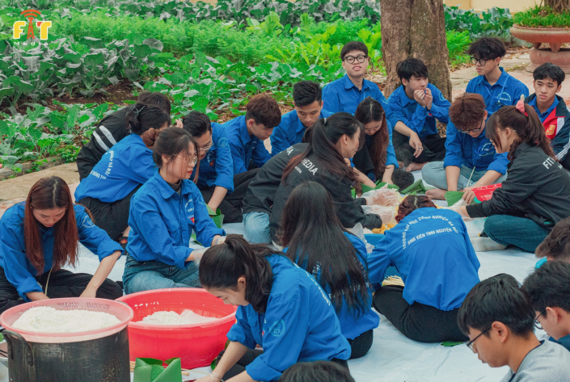

ĐỘI THANH NIÊN TÌNH NGUYỆN KHOA CÔNG NGHỆ THÔNG TIN TRƯỜNG ĐẠI HỌC CÔNG NGHIỆP HÀ NỘI
“Muốn đi nhanh thì đi một mình
Muốn đi xa thì hãy đi cùng Đội TNTN Khoa CNTT”

Tết ấm yêu thương là chương trình thường niên của Đội TNTN Khoa CNTT mỗi khi dịp tết đến xuân về. Chương trình tổ chức nhằm mong muốn lan tỏa không khí tết xum vầy đến với những người có hoàn cảnh khó khăn, yếu thế trong xã hội với mong muốn “Ai cũng có Tết”.
Tại đây các bạn tình ngyện viên đã có cơ hội tự tay gói và luộc những chiếc bánh trưng để gửi đến các bác, các ông thương binh. Đồng thời giao lưu thăm hỏi động viên các bác.